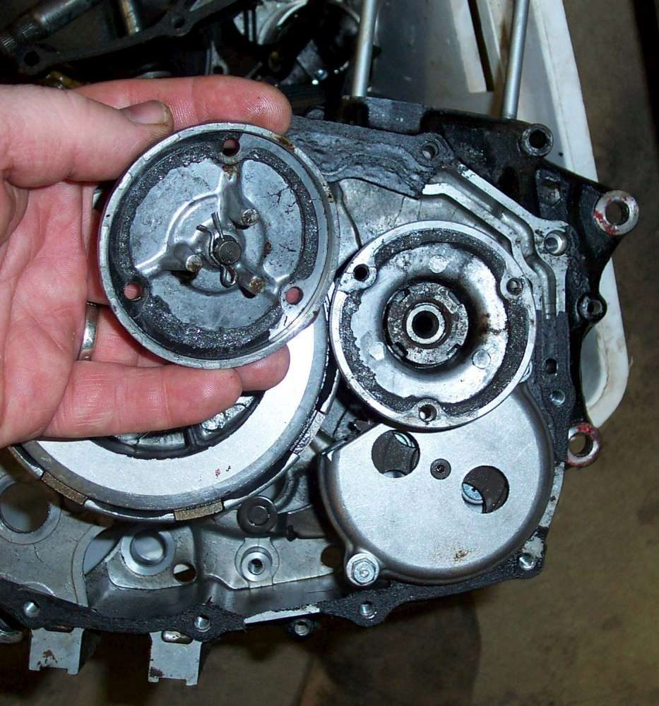
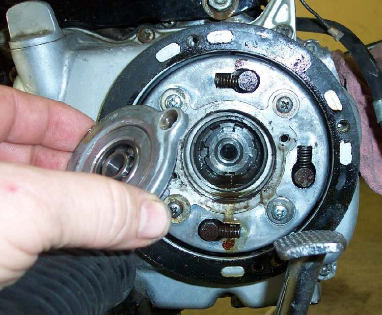

A centrifugal filter is a spinning drum or cup. Oil is pumped through it and the heavy dirt is thrown to the wall and stays there. It has no element to replace, so it must be cleaned. It is found on some small single-cylinder engines and older twins, either in the middle of the clutch hub or as a separate cup under a cover.
Safety
- Drain the oil into a pan and let the engine cool before you open covers.
- Keep dirt out of the engine while it is open.
You need
- The manual, to see whether a small cover gives access or the whole clutch cover must come off.
- A new cover gasket or sealant as the manual states.
- Clean solvent and a soft scraper.
Steps
- Drain the oil. Remove the small cover on the clutch cover, or the whole clutch cover, as the manual shows.
- Take out the cap or cup. Expect a layer of sludge. This is the dirt the filter is meant to catch.
- Scrape the sludge out and wash the parts in clean solvent. Look for metal glitter in the sludge. Metal means wear: see Metal particles or flakes in the oil.
- Check that the oil holes are open and the cap or cup seals correctly.
- Refit with a new gasket or seal, tighten the bolts evenly, and refill with oil.
- Start the engine and check for leaks and for the oil light.
Check your work
- The cover is dry after the engine has run and cooled.
- The oil level is correct after the engine has rested.
If it did not fix the problem
- Oil still dark very soon after a change: Oil turns black very soon after a change.